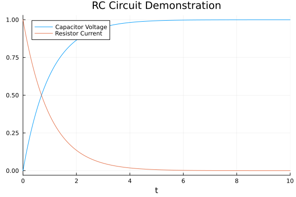

RC Circuit Model
This tutorial is a simplified version of the RC circuit tutorial in the ModelingToolkit.jl documentation. In that tutorial, the full RC circuit is built from scratch. Here, we will use the components of the Electrical model in the ModelingToolkit Standard Library to simply connect pre-made components and simulate the model.
using ModelingToolkit, OrdinaryDiffEq, Plots
using ModelingToolkitStandardLibrary.Electrical
using ModelingToolkitStandardLibrary.Blocks: Constant
R = 1.0
C = 1.0
V = 1.0
@variables t
@named resistor = Resistor(R=R)
@named capacitor = Capacitor(C=C)
@named source = Voltage()
@named constant = Constant(k=V)
@named ground = Ground()
rc_eqs = [
connect(constant.output, source.V)
connect(source.p, resistor.p)
connect(resistor.n, capacitor.p)
connect(capacitor.n, source.n, ground.g)
]
@named rc_model = ODESystem(rc_eqs, t, systems=[resistor, capacitor, constant, source, ground])
sys = structural_simplify(rc_model)
prob = ODAEProblem(sys, Pair[], (0, 10.0))
sol = solve(prob, Tsit5())
plot(sol, vars = [capacitor.v, resistor.i],
title = "RC Circuit Demonstration",
labels = ["Capacitor Voltage" "Resistor Current"])┌ Warning: To maintain consistency with solution indexing, keyword argument vars will be removed in a future version. Please use keyword argument idxs instead.
│ caller = ip:0x0
└ @ Core :-1